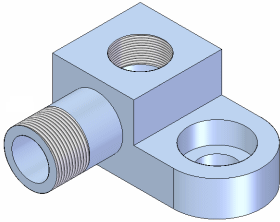

Threaded features
When constructing part and assembly features in Solid Edge, you can use the Hole and Thread commands to define threaded features.

Threads options are contained in the selected standard holes database.
Options are available to control whether threaded features are displayed simply or realistically in a shaded view.
When creating drawings, you can set the thread depiction standard to control how straight and tapered threaded features are displayed.
For internal threaded holes, you should use the Hole command whenever possible:
For external threaded features, such as threaded rods, shafts, and external pipe threads, you should use the Thread command.
Although you can use the Thread command to construct internal threads, there are several advantages to using the Hole command:
-
You can construct multiple threaded holes using one feature.
-
The threaded hole feature can pierce a non-planar face.
-
It is easier to define the thread size using the Hole command because you define the hole size and thread size in one operation, rather than two operations.
When constructing external threaded features using the Thread command, you can also define an offset value for the start end of the thread. The offset value you specify will be graphically displayed in drawing views in the Draft environment.
How do I
Add a thread reference to a featureLearn more
Displaying threads realistically in a shaded viewAvailable thread sizes with the Thread command
Editing threaded features
Depicting threads on drawings
Thread extent definition and tapered threads
Look up more details
Thread commandThread command bar (synchronous)
Thread command bar (ordered)
Thread Options dialog box (synchronous)
Thread Options dialog box (ordered)